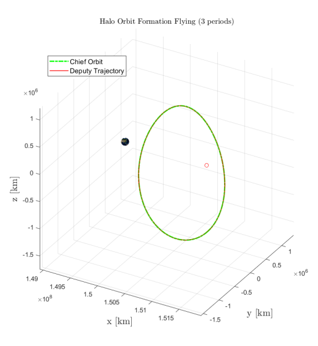

CR3BP · LYAPUNOV CONTROL
Station Keeping & Formation Flying at Sun–Earth L2
Lyapunov-based station-keeping and chief–deputy formation-flying control for spacecraft operating in the nonlinear Sun–Earth CR3BP.
Problem
Maintain a spacecraft on an inherently unstable Sun–Earth L2 halo orbit and simultaneously regulate the relative position of a deputy spacecraft with respect to a chief.
My role
Worked on the station-keeping and formation-flying control problems, including Lyapunov controller formulation, gain studies, simulation, and performance evaluation. Halo-orbit generation was handled by other team members.
Workflow
Control problem
The reference halo orbit is generated by the team and then treated as the desired trajectory. My work focused on two control layers: keeping the chief spacecraft close to that unstable reference orbit and controlling a deputy spacecraft relative to the chief. Both controllers were derived using Lyapunov functions of position and velocity error.
Selected results

Outcome
Demonstrated Lyapunov-based station keeping and chief–deputy formation control in nonlinear Sun–Earth CR3BP dynamics, while quantifying the tracking-accuracy versus control-effort trade.